Geen bezwaar om de installatie (opnieuw) in bedrijf te stellen, mits de installatie naar professioneel oordeel veilig is.
MonteurMaatjeTechnische serviceassistent
Kennisbank laden…
TECHNISCHE INFO. DIRECT BIJ DE HAND.
Vind het toestel.
Werk gericht verder.
Kies merk en toestel. Storingscodes, parameters, afstelgegevens en diagnose direct overzichtelijk bij de hand.
—officiële storingsrecords
TECHNISCHE RICHTLIJNEN
Richtlijnen
Praktische richtlijnen en grenswaarden voor onderweg, met directe verwijzingen naar officiële bronnen.
ROOKGASAFVOER
Rogafa
Praktische rookgasafvoer-informatie voor onderweg. MonteurMaatje vat de officiële Rogafa-bronnen compact samen; fabrikantdocumentatie en officiële bron blijven leidend.
Bronnen in deze pagina
Het Nieuwe Beugelen 2024-11 · CLV C(10)₃ versie 1.5 · RGA bij ketelvervanging
RGA Het Nieuwe BeugelenMontage, beugelafstanden, afschot en verbindingen ⌄
Kernregel
Beugel volgens het systeemvoorschrift, monteer spanningsvrij en zorg voor 3° afschot (50 mm per meter) richting het toestel waar dit voor de rookgasafvoer is voorgeschreven.
Kunststof RGAEnkelwandig kunststof · in het zicht
- Elke bocht en verlengbuis fixerend beugelen op de mof.
- Eerste beugel maximaal 0,5 m vanaf het toestel; ieder systeem bevat minimaal één beugel.
- Bij meer dan 1 m tussen fixerende mofbeugels: een niet-fixerende beugel ertussen.
- Minimale insteeklengte na montage 40 mm; bij kunststof lengten t/m 2 m circa 10 mm terugtrekken voor uitzetting.
- Laatste element vóór doorvoer/schacht beugelen.
- Niet schroeven/parkeren, kitten, schuimen of plakken; geen vet, vaseline of olie op afdichtringen.
Bekijk beugelschema
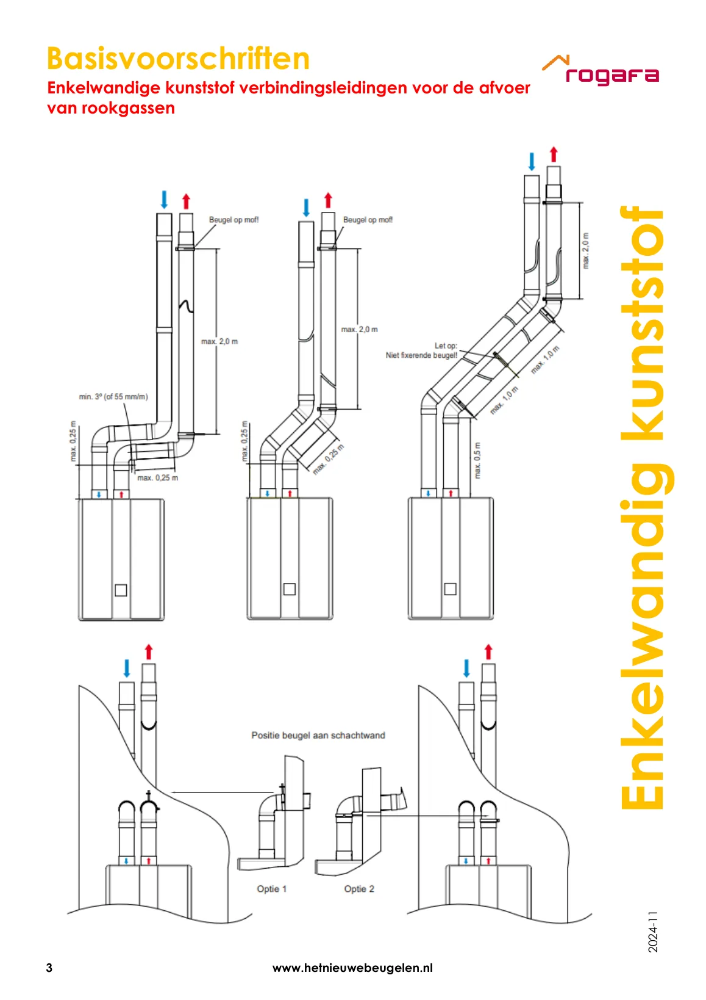
Metalen RGAEnkelwandig aluminium of RVS
- Iedere bocht op of nabij de mof beugelen.
- Horizontaal/niet-verticaal: maximaal 1 m tussen beugels; verticaal maximaal 2 m.
- Eerste beugel maximaal 0,5 m vanaf het toestel; laatste element vóór doorvoer/schacht beugelen.
- Minimale insteeklengte 40 mm en 3° afschot (50 mm/m) naar het toestel.
- Geen verschillende materialen/fabricaten mixen, behalve waar fabrikant of genoemde Gastec QA-uitzondering dit toestaat.
- Rookgasverbindingen niet schroeven/parkeren, kitten, schuimen of plakken.
Bekijk beugelschema
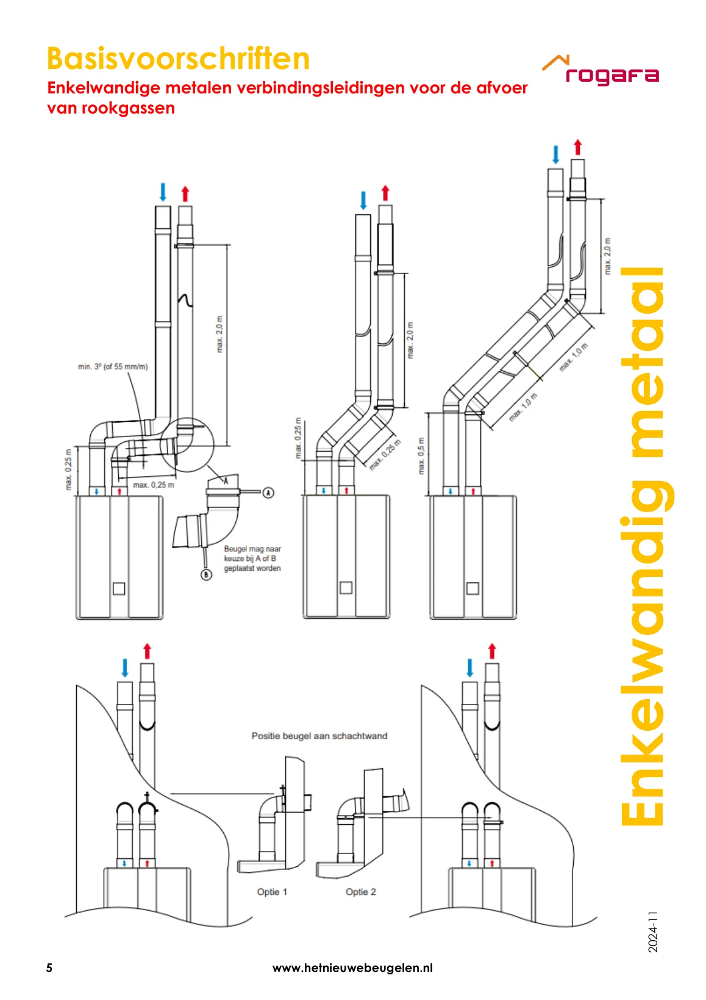
ConcentrischRookgasafvoer + verbrandingslucht
- Iedere bocht op of nabij de mof beugelen.
- Horizontaal/niet-verticaal: maximaal 1 m; verticaal: maximaal 2 m.
- Eerste beugel maximaal 0,5 m vanaf het toestel en minimaal één beugel per systeem.
- Componenten maximaal insteken, spanningsvrij monteren en 3° afschot naar het toestel aanhouden.
- Geen componenten van verschillende materialen of fabricaten mixen.
- Metalen buitenpijp mag volgens voorschrift geschroefd/geparkerd worden; kunststof buitenpijp alleen op de door de fabrikant aangegeven positie en wijze.
Bekijk beugelschema
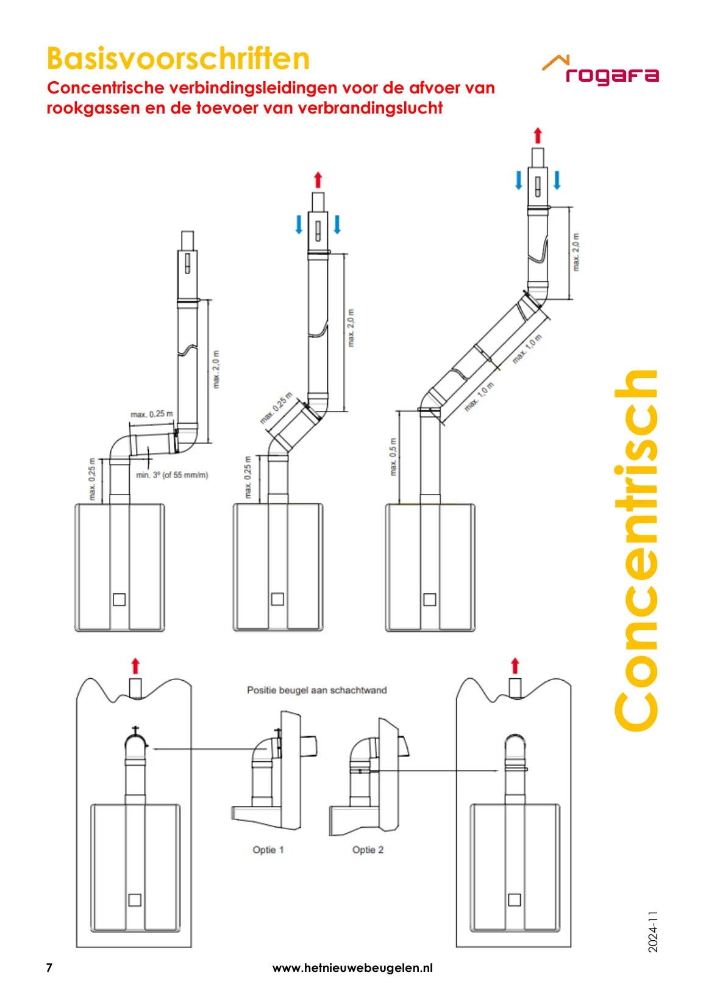
LuchttoevoerEnkelwandige verbrandingsluchttoevoer
- Eerste beugel maximaal 0,5 m vanaf het toestel; bij een korte verlengbuis vóór de eerste bocht kan de aangegeven uitzondering gelden.
- Horizontaal/niet-verticaal: maximaal 1 m; verticaal maximaal 2 m.
- Bij kunststof luchttoevoer minimaal 35 mm afstand tot metalen rookgasleiding.
- Minimale insteeklengte 40 mm, spanningsvrij monteren en laatste element vóór schacht/doorvoer beugelen.
- Geen ongeoorloofde materiaal-/fabricatenmix; trekvaste systemen volgens fabrikantvoorschrift.
Bekijk beugelschema
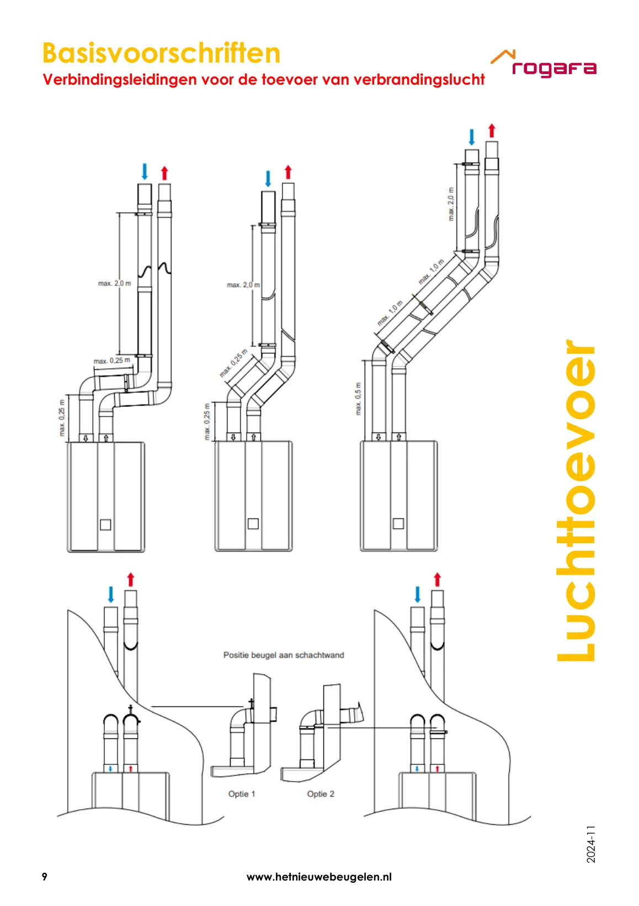
Metaal in schachtRGA en/of luchttoevoer in de schacht
- Horizontale leiding naar het toestel: 3° afschot en na brandwerende voorzieningen minimaal 50 mm vrije insteekmogelijkheid.
- Verticaal: maximaal verdiepingshoogte of 4 m bij maximaal drie elementen per verdieping; bij meer elementen maximaal 2 m.
- Bij verslepingen iedere bocht beugelen; maximaal 1 m tussen beugels.
- Bevestig beugels deugdelijk aan het gebouw; langere uitkraging via fabrikant-verlengset of een deugdelijke constructie.
- Trekvaste verbindingen: maximale beugelafstand volgens fabrikantvoorschrift.
Bekijk beugelschema
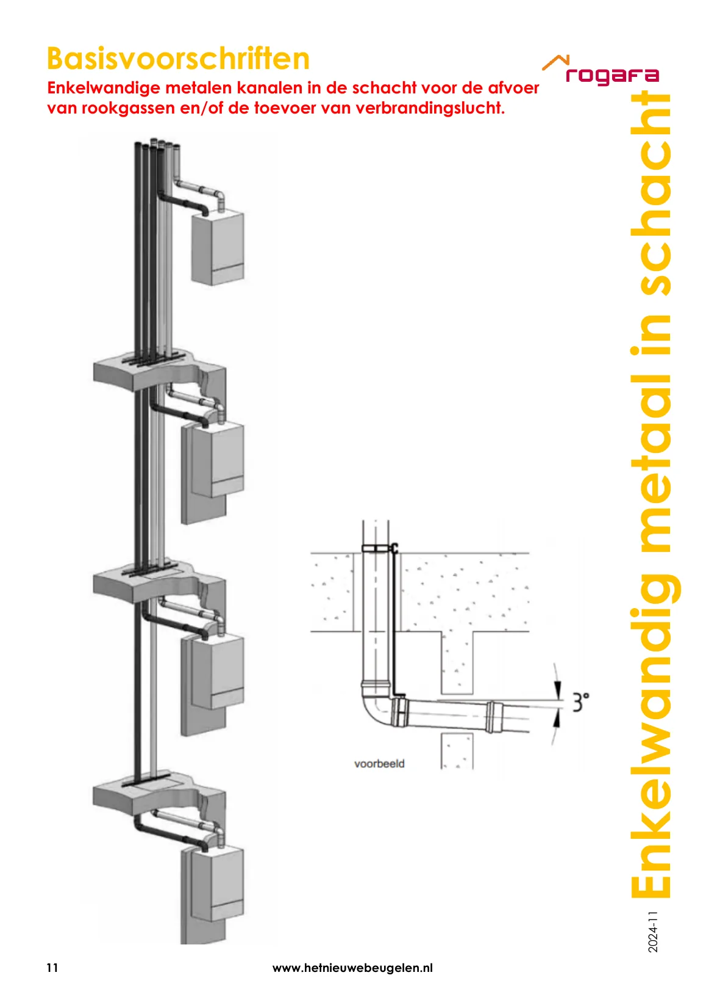
Officiële bronRogafa - Beugelvoorschrift V11, 2024-11
Open officieel voorschrift ↗
↻ RGA bij ketelvervangingWat te doen met de bestaande rookgasafvoer ⌄
Rogafa-advies
Bij vervanging van de ketel adviseert Rogafa het rookgasafvoerkanaal mee te vervangen wanneer dit ouder is dan 5 jaar.
Collectief systeem
Een collectief kanaal met meerdere toestellen vraagt een afzonderlijke beoordeling; iedere situatie is afhankelijk van de bestaande installatie.
- Niet-condenserende (VR) en condenserende (HR) toestellen horen niet gecombineerd op hetzelfde collectieve rookgasafvoerkanaal.
- Bij een collectief systeem moet worden vastgesteld of het kanaal geschikt is voor de nieuwe toestellen.
- Gebruik de situatie ter plaatse en de documentatie van toestel- en systeemfabrikant voor het uiteindelijke advies.
Officiële bronRogafa - Vervangen ketel
Open officiële pagina ↗
CLV CLV-systemen C(10)₃Gemeenschappelijke luchttoevoer en rookgasafvoer onder overdruk ⌄
Herkennen
C(10)₃ is een CLV-overdruksysteem voor geschikte gesloten toestellen met ventilator. De gemeenschappelijke luchttoevoer en rookgasafvoer zijn concentrisch uitgevoerd.
- Gemeenschappelijke voorzieningen: CE-gemarkeerd en concentrisch.
- Toestelaansluitingen op het gemeenschappelijke systeem: concentrisch 100 mm luchttoevoer / 60 mm rookgasafvoer.
- Geen trekonderbreker aan de onderzijde van het CLV-systeem.
- Rookgasafvoer onderaan voorzien van condensafvoer; luchttoevoer zo nodig van regenwaterafvoer.
- Aansluitleiding toestel: concentrisch, maximale lengte volgens toestelvoorschrift en gemonteerd volgens de Rogafa-basisvoorschriften voor concentrisch.
Bekijk principe C(10)₃
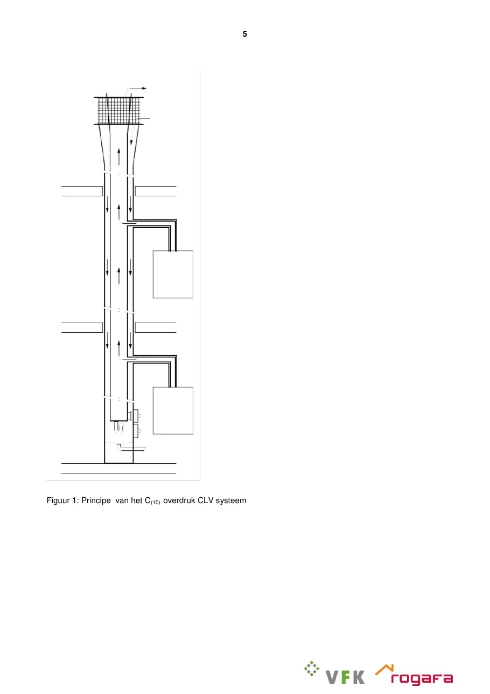
InspectieRGA en luchttoevoer moeten zonder speciale hulpmiddelen toegankelijk zijn voor inspectie/reiniging.
TypeplaatBij iedere aansluiting en bij het inspectieluik horen de voorgeschreven systeemgegevens aanwezig te zijn.
BrandveiligheidSchacht en doorvoeringen moeten voldoen aan de toepasselijke brandveiligheidseisen; fabrikant- en projectspecificaties blijven leidend.
DimensioneringMaximaal twee toestellen per verdieping; luchttoevoeroppervlak minimaal 1,25 × RGA-oppervlak. Gebruik voor diameters de officiële tabellen/fabrikantberekening.
Meer C(10)₃ toestelvoorwaarden
- Toestel inclusief aansluitleiding moet volgens het document bestand zijn tegen minimaal 25 Pa overdruk bij minimale belasting.
- Het toestel heeft een terugslagvoorziening met de vereiste dichtheid en levensduurbeproeving.
- Het toestel moet geschikt zijn voor 10% rookgasrecirculatie en voor de in het document genoemde onderdruksituatie.
- Controleer altijd of de specifieke ketel door de toestelfabrikant voor C(10)₃ is vrijgegeven.
BelangrijkDe technische documentatie van toestel- en CLV-fabrikant gaat boven de voorbeelden en interpretaties uit het Rogafa/VFK-document.
Officiële bronRogafa / VFK - C(10)₃ CLV, versie 1.5 (01-07-2017)
Open officieel voorschrift ↗
MonteurMaatje is een praktisch hulpmiddel. Controleer bij twijfel altijd de officiële bron en het product-specifieke voorschrift van de fabrikant.
HERKENNING · ASBESTVERDACHT MATERIAAL
Asbestverdacht materiaal
Praktische herkenningshulp voor materialen die een installatiemonteur kan tegenkomen. Deze pagina stelt niet vast dat iets asbest bevat; alleen onderzoek en laboratoriumanalyse kunnen dat bevestigen.
Primaire bronnen
IPLO Asbestwegwijzer · Arboportaal · Ascert · geraadpleegd 23-08-2026
Belangrijk onderscheid
Een uiterlijk kenmerk of een bekende toepassing maakt materiaal alleen asbestverdacht. IPLO vermeldt dat alleen laboratoriumanalyse kan vaststellen of een materiaal of product daadwerkelijk asbest bevat.
CV CV-ketel, boiler en geiserPlaten, pakkingen, afdichtkoord en afvoer rond oude toestellen ⌄
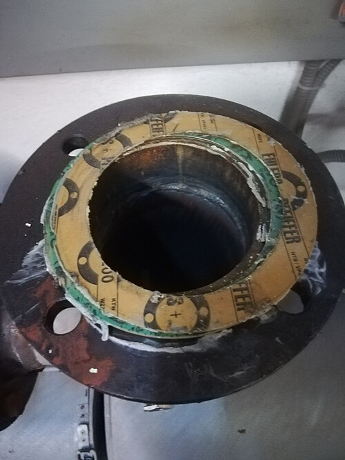
Waar op letten
Bij oudere installaties kan asbestverdacht materiaal voorkomen als plaat onder of rond een CV-ketel, als pakking of afdichtkoord, in een asbestcement afvoerbuis of als isolatie rond de afvoer.
- Een geiser kan asbestverdacht afdichtkoord of pakkingen bevatten.
- Plaatmateriaal onder of rondom een installatie kan bestaan uit cement, gips, vezelplaat of karton waarin asbest is toegepast.
- Een oude afvoer- of ventilatiebuis kan van asbestcement zijn.
- De bouw- en installatieperiode helpt bij de inschatting: in gebouwen van vóór 1994 kan asbest zijn toegepast.
Officiële fotohulp en bronIPLO Asbestwegwijzer – binnen in huis, hotspots CV-ketel/boiler en geiser
Bekijk officiële voorbeelden ↗
RGA Rookgas-, ventilatie- en afvoerkanalenAsbestcement buizen, luchtkanalen en schoorstenen ⌄
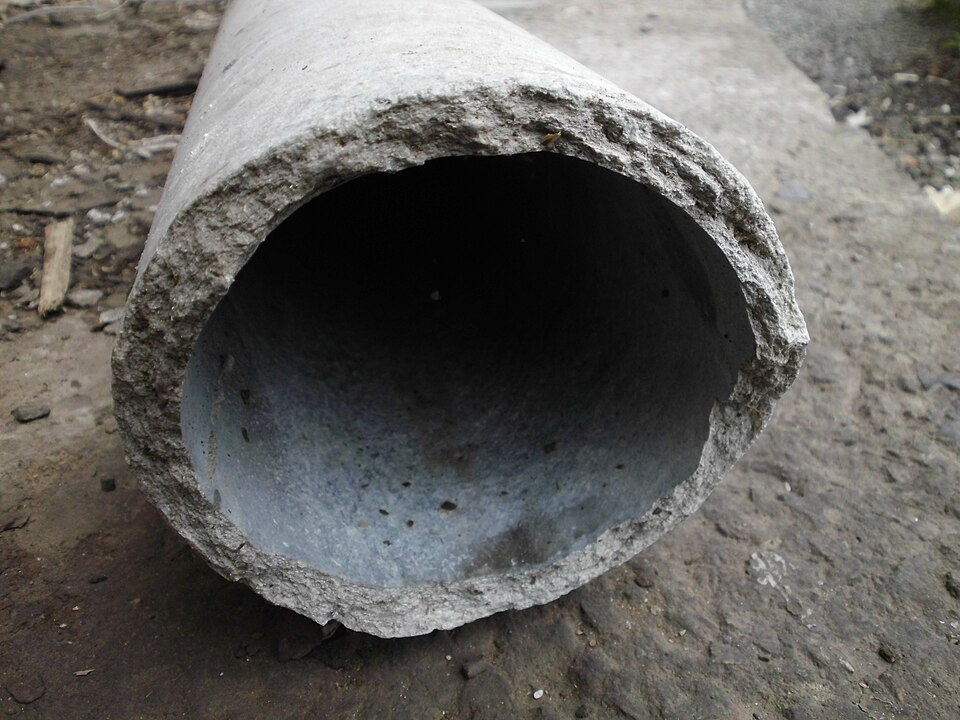
Herkenningssignalen
Asbestcement is in het verleden toegepast in schoorstenen, luchtkanalen, standleidingen en rioolbuizen. Kanalen kunnen rond, vierkant of als vlakke plaat zijn uitgevoerd. Sommige oude asbestcement schoorsteenbuizen hebben aan de buitenzijde een kenmerkend ruitjespatroon; dit kenmerk alleen bewijst niets.
- Let vooral op oude harde grijsachtige cementachtige kanalen bij kachel-, CV- en ventilatietoepassingen.
- Aftimmering rond een schoorsteen- of dakdoorvoer kan eveneens asbestverdacht cement, karton of vezelplaat bevatten.
- Materiaalsoort en locatie zijn signalen; een visuele beoordeling kan asbest niet bevestigen.
Officiële fotohulp en bronIPLO – Leidingen, buizen en schoorstenen
Bekijk officiële voorbeelden ↗
KRD Afdichtkoord en pakkingenOude afdichtingen rond rookgas, leidingen, haarden en toestellen ⌄
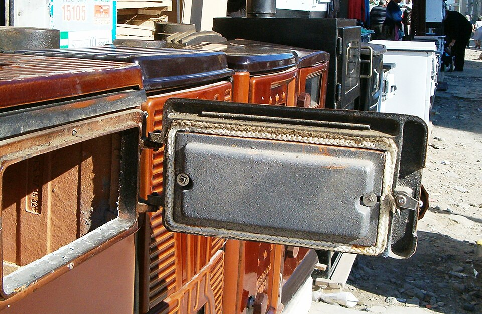
Herkenningssignalen
IPLO beschrijft asbestkoord als vaak pluizig en wit tot vuilgrijs. Het is onder andere gebruikt als pakkingkoord en als afdichting bij rookgasafvoeren, schoorstenen en leidingdoorvoeren.
- Asbestkoord werd volgens IPLO regelmatig toegepast in gebouwen van vóór 1975 en in oude haarden en allesbranders.
- Ook rond leidingwerk en als pakking kan oud koord voorkomen.
- Kleur of structuur is nooit voldoende om vast te stellen dat het asbest is.
Officiële fotohulp en bronIPLO – Asbestkoord
Bekijk officiële voorbeelden ↗
ISO Leiding- en ketelisolatieIsolatielagen, schalen en platen rond warmtebronnen ⌄
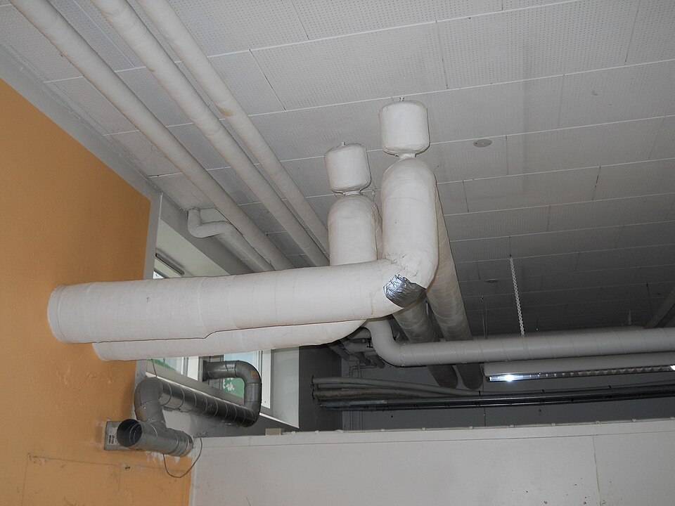
Waar op letten
Asbest is gebruikt als thermische isolatie rond verwarmingsketels en leidingen. Ook isolatieplaten zijn toegepast in ketelommanteling, cv-kasten en brandwerende constructies.
- Oude isolatielagen of -schalen rond warmwater- en verwarmingsleidingen kunnen asbestverdacht zijn.
- Oud plaatmateriaal in een cv-kast of als brandwerende afscherming kan eveneens verdacht zijn.
- IPLO waarschuwt dat beschadigde losgebonden isolatielagen gemakkelijk vezels kunnen afgeven; beoordeel de toepassing daarom niet door materiaal open te maken.
Officiële fotohulp en bronIPLO – Asbest in isolatiemateriaal
Bekijk officiële voorbeelden ↗
BLD Plaatmateriaal en bouwkundige omgevingMeterkast, kruipluik, aftimmering, vloer en doorvoeren ⌄
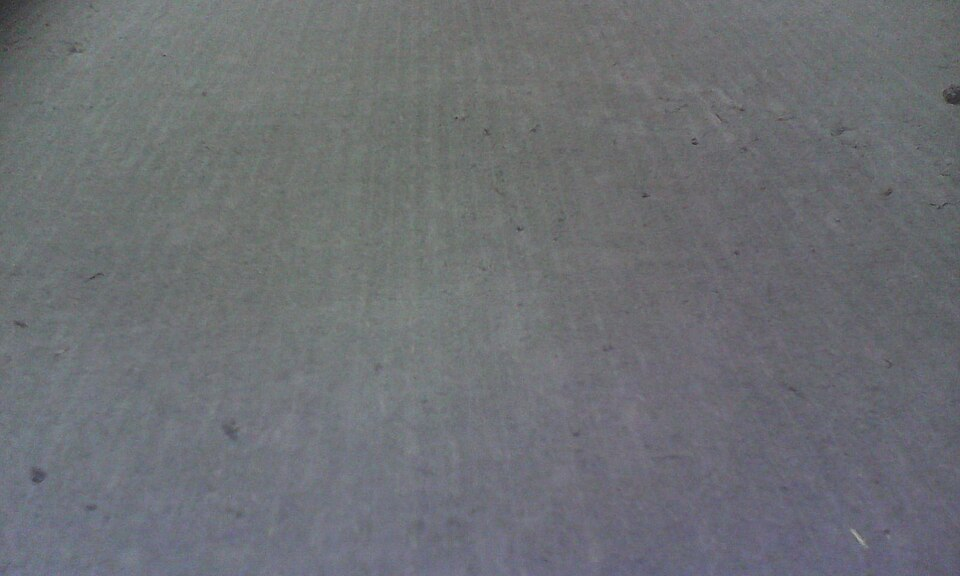
Monteursomgeving
Niet alleen het toestel zelf is relevant. IPLO noemt onder andere aftimmering in meterkasten, kruipluiken, vensterbanken, vloerbekleding, platen achter radiatoren en aftimmering rond dak- of schoorsteendoorvoeren als plaatsen waar asbestverdacht materiaal kan voorkomen.
- Meterkast: aftimmering, deur-/bovenlichtbekleding en afdekplaat van het kruipluik.
- Kruipruimte/vloer: luikbekleding, oude vinyltegels of vloerzeil en sommige lijmlagen.
- Doorvoeren en schouwen: cement-, karton- of vezelplaat rond rookgas- en dakdoorvoeren.
- Gebruik de locatie als aanwijzing, niet als bewijs.
Officiële fotohulp en bronIPLO Asbestwegwijzer – hotspots in de woning
Bekijk officiële voorbeelden ↗
? Wanneer is iets alleen 'verdacht'?Periode + toepassing + materiaalbeeld combineren ⌄
Periode
Arboportaal vermeldt dat asbest vooral na 1950 veel is toegepast en dat sinds 1 juli 1993 een verbod geldt op bewerken, verwerken en in voorraad houden. IPLO gebruikt daarom praktisch de grens: gebouw van vóór 1994 = kans op toepassing.
Zekerheid
Een herkenningssignaal leidt alleen tot de aanduiding asbestverdacht. Een gecertificeerde inventarisatie en/of laboratoriumanalyse is nodig voor vaststelling.
Aanvullende officiële bronnenArboportaal voor historische/arbeidscontext · Ascert voor gecertificeerde inventarisatie en registers
Deze herkenningshulp is informatief en geen asbestinventarisatie. Bij twijfel blijft de officiële bron en de geldende bedrijfsprocedure leidend.
BRL 6000-25 · CO-CERTIFICERING
CO & grenswaarden
Snelle referentie voor CO-metingen in de opstellingsruimte en rookgas. Fabrikantvoorschriften blijven leidend wanneer zij een specifiekere meetinstructie of grenswaarde geven.
CO in de opstellingsruimte
Beoordeling rond het gastoestel.
Installatie niet opnieuw in bedrijf stellen voordat de oorzaak van de verhoogde CO-concentratie is onderzocht en weggenomen.
Meldplicht volgens BRL 6000-25/Bbl-procedure. Oorzaak moet worden weggenomen voordat de installatie opnieuw in bedrijf wordt gesteld.
Interne veiligheidskaart
Bij 20–400 ppm: ventileren en aanwezigen waarschuwen, oorzaak onderzoeken en indien niet gevonden hulpdiensten inschakelen. Boven 400 ppm: direct naar buiten en hulpdiensten inschakelen.
Maximale CO in rookgas
Als het fabrikantvoorschrift geen andere grenswaarde voorschrijft.
Open toestel, afvoerloos
Open toestel, afvoergebonden
Gesloten toestel
Fabrikant gaat voorLees de installatie-/servicehandleiding van het toestel. Fabrikanten kunnen meetinstructies of grenswaarden aanpassen.
Officiële bronnenBRL 6000-25 (actuele aangewezen versie) · InstallQ CO-certificering
Richtlijnen zijn een praktisch hulpmiddel. Controleer bij twijfel altijd de actuele officiële bron en het fabrikantvoorschrift.
PRAKTISCHE INSTALLATIEHULP
Tools
Snelle praktijktools voor het instellen en beoordelen van installaties. De monteur bepaalt altijd de definitieve instelling.
kW
CV-INSTALLATIE
CV-installatie afstellen
Praktische startwaarde voor CV-vermogen, daarna direct de juiste toestelinstellingen erbij.
STAP 1 · BEREKEN RICHTWAARDE
Richtwaarde maximaal CV-vermogen
—
- Radiatoren
- 0,0 kW
- Vloerverwarming
- 0,0 kW
- Praktijkreserve
- —
Praktijk-vuistregel, geen warmteverliesberekening.
STAP 2 · KIES KETEL
Welke ketel staat er?
Kies merk en ketel. MonteurMaatje toont daarna direct de bestaande parameter waarmee het maximale CV-vermogen wordt ingesteld.
STAP 3 · AANVOERTEMPERATUUR
Maximale CV-aanvoertemperatuur
Stel de aanvoertemperatuur los van het maximale CV-vermogen in. Kies hem zo laag als praktisch mogelijk, zolang de installatie de woning comfortabel warm krijgt.
Kies eerst een ketel. Als de huidige toesteldata een eenduidige maximale CV-aanvoertemperatuur bevat, verschijnt die parameter hier.
STAP 4 · CONTROLE NA AFSTELLEN
Beoordeel het installatiegedrag
- ✓
Wordt de woning bij warmtevraag goed en gelijkmatig warm?
- ✓
Loopt de ketel rustig door zonder onnodig snel in- en uitschakelen?
- ✓
Bereikt de ketel niet direct zijn maximale aanvoertemperatuur terwijl de woning nog warmte vraagt?
- ✓
Controleer doorstroming en pompinstelling als afgifte of temperatuurverdeling niet logisch is.
De tool geeft een praktische startinstelling. De monteur bepaalt de definitieve instelling op basis van woning, installatie en werkelijk gedrag.
m³
HR-KETEL · OPSTELLINGSRUIMTE
Opstellingsruimte controleren
Praktische controle van ruimte-inhoud en benodigde permanente luchttoevoer/-afvoer volgens NPR 3378-22.
STAP 1 · RUIMTE & TOESTEL
m
m
m
kW
MonteurMaatje ondersteunt deze tool voor jullie praktijkbereik t/m 40 kW.
UITKOMST
Vul de ruimte en toestelbelasting in
Daarna vergelijkt MonteurMaatje de werkelijke inhoud met 0,2 × nominale belasting.
HOE WORDT BEOORDEELD?
Benodigde ruimte-inhoud = 0,2 × BB = nominale belasting bovenwaarde in kW
Is de werkelijke ruimte-inhoud groter dan de berekende grens, dan is volgens deze beoordeling geen aanvullende At/Aa-opening nodig. Is de ruimte kleiner dan of gelijk aan de grens, dan is voor jullie toestellen t/m 40 kW minimaal 50 cm² vrije doorlaat At én 50 cm² vrije doorlaat Aa nodig.
Vrije doorlaat
50 cm² is de effectieve vrije opening, niet automatisch de buitenmaat van het rooster. Controleer daarnaast altijd fabrikantvoorschrift en feitelijke opstellingssituatie.
BronNPR 3378-22:2023 – Opstelplaatsen van gastoestellen, opstellingsruimten en stookruimten
WP
REMEHA ELGA ACE
Elga Ace afstellen
Inbedrijfstelling & optimalisatie op basis van de officiële Elga Ace-data en Remeha Kennisbank.
STAP 1 · TOESTEL & INSTALLATIE
STAP 2 · DEBIET
Streefdebiet12l/min
Lees de werkelijke waterflow uit via AM056. Dit is een meetwaarde, geen instelparameter.
Waarom is debiet zo belangrijk?
De warmtepomp moet zijn geproduceerde warmte via het CV-water kunnen afvoeren. Te weinig liters per minuut beperken de warmteoverdracht; de warmtepomp kan daardoor minder efficiënt werken, onvoldoende vermogen kwijt en uiteindelijk een flowstoring geven of eerder hulp van de cv-ketel nodig hebben.
Richtwaarde: 12 l/min voor 4 kW en 17 l/min voor 6 kW. Knijp het systeem niet om kunstmatig een bepaalde ΔT te maken; zorg eerst dat het vereiste debiet beschikbaar is.
Debiet te laag?
- Radiatoren en vloerverwarmingsgroepen volledig openen.
- CV-druk controleren; Remeha noemt 1,5–2 bar bij afgekoeld systeem.
- Installatie, ketel en warmtepomp ontluchten.
- Retourfilter controleren/reinigen.
- Afsluiters en hydraulische weerstand controleren.
- Bij zone-/naregeling hydraulische opzet/buffervat beoordelen.
STAP 3 · REGELING & STOOKLIJN
Stel de stooklijn zo laag mogelijk in met behoud van comfort. Een te hoge stooklijn kost rendement; een te lage geeft comfortklachten.
STAP 4 · HYBRIDE & BACK-UP
Hier bepaal je wanneer en op welke strategie de cv-ketel ondersteunt. Meer warmtepompinzet kan gas besparen, maar mag niet ten koste gaan van comfort.
STAP 5 · EINDCONTROLE
- ✓
AM056 zit rond het streefdebiet voor het gekozen model.
- ✓
PP016 staat op 100% en HP069 staat op het juiste modeldebiet indien beschikbaar.
- ✓
De woning wordt comfortabel warm met een zo laag mogelijke stooklijn.
- ✓
De cv-ketel springt niet onnodig vroeg bij, maar comfort blijft behouden.
- ✓
Controleer recente storingen, compressor-/back-upgedrag en installatieflow na wijzigingen.
IG
INTERGAS XTEND ECO
Xtend Eco afstellen
Hybride inbedrijfstelling, stooklijn en Xtore op basis van het officiële Intergas installatievoorschrift.
STAP 1 · HYDRAULIEK & POMP
Flow eerst, instellingen daarna
De Xtend Eco moet zijn warmte via voldoende waterflow kwijt kunnen. P081 begrenst de maximale pompaansturing; P086 kan het debiet reduceren wanneer ΔT onder de ingestelde waarde komt. Bij flowproblemen eerst vullen, ontluchten, filter/afsluiters en hydraulische weerstand controleren.
STAP 2 · HYBRIDE REGELING
P100 bepaalt de hoofdstrategie. De bivalentgrenzen en wachttijden bepalen vervolgens wanneer de cv-ketel mag ondersteunen of overnemen.
STAP 3 · STOOKLIJN
Radiatoren of vloerverwarming?
Intergas geeft afzonderlijke stooklijnvoorbeelden. Bij P194 = 40 °C gebruikt het voorschrift bijvoorbeeld P192 = 0,74 en P210 = 0 voor radiatoren, tegenover P192 = 0,44 en P210 = 8 voor vloerverwarming. Dit zijn voorbeeldinstellingen uit de handleiding, geen universele woningberekening.
STAP 4 · XTORE
Belangrijk voor legionellapreventie
Intergas schrijft voor de CV-aanvoertemperatuur van de cv-ketel op minimaal 75 °C te zetten zodat het wekelijkse legionellaprogramma de Xtore tot 65 °C kan verwarmen.
Basis inbedrijfstelling Xtore
Volgens Intergas: P003 = Intergas Xtore, P046 = Ja, P068 óf P069 = warmwatervat-klepsturing, P076 = warmwatervatsensor, P077 = temperatuurbeveiligingssensor CV indien aangesloten en P079 op de gewenste doeltemperatuur. De Xtore-handleiding adviseert 50 °C. Na opslaan de Xtend minimaal 30 seconden spanningsloos maken en opnieuw starten.
Aansluiten & activeren
Tapwater optimaliseren
STAP 5 · EINDCONTROLE
- ✓
Controleer flow, systeemdruk, ontluchting en stabiel pompgedrag.
- ✓
Controleer of de gekozen hybride modus logisch schakelt tussen warmtepomp en cv-ketel.
- ✓
Stooklijn zo laag mogelijk met behoud van comfort.
- ✓
Bij Xtore: klepwerking, vatsensor, doeltemperatuur en legionellaprogramma controleren.
- ✓
Bij Xtore: cv-ketel maximaal aanvoer minimaal 75 °C voor legionellapreventie.
Tools ondersteunt de monteur met praktische startwaarden en officiële toestelparameters. De definitieve instelling blijft een vakinhoudelijke beoordeling.
Beugelschema
Knijp om te zoomen · sleep om te verschuiven